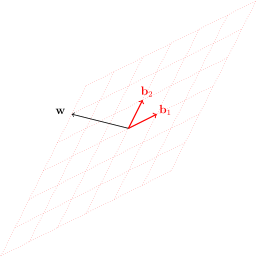

Subsection2.5.1Coordinate vectors are different in different bases
Suppose that \(\basis{B} = \left\{ \ve{b}_1, \ve{b}_2 \right\}\) and \(\basis{C} = \left\{ \ve{c}_1, \ve{c}_2 \right\}\) are two different bases for \(\mathbb{R}^2\text{,}\) shown below:
Figure2.5.1 Two different bases for \(\mathbb{R}^2\)
Suppose we are given a vector \(\ve{w} \in \mathbb{R}^2\text{:}\)

We would like to compute the coordinate vector of the same vector \(\ve{w}\) with respect to the two different bases \(\basis{B}\) and \(\basis{C}\text{.}\)
For this particular \(\ve{w}\text{,}\) from Figure 2.5.1(a), we see that in the basis \(\basis{B}\text{,}\) we have
So, the same vector \(\ve{w}\) has different coordinate vectors \([\ve{w}]_\basis{B}\) and \([\ve{w}]_\basis{C}\) with respect to the bases \(\basis{B}\) and \(\basis{C}\text{!}\)
Subsection2.5.2Changing from one basis to another
Now, suppose we only knew \([\ve{w}]_\basis{B}\text{,}\) the coordinate vector of \(\ve{w}\) in the basis \(\basis{B}\text{.}\) In other words, suppose we only knew that
that is, \(\ve{w} = -3 \ve{b}_1 + 2 \ve{b}_2\text{.}\) How could we compute \([\ve{w}]_\basis{C}\text{,}\) the coordinate vector of \(\ve{w}\) in the basis \(\basis{C}\text{?}\)
The best way is to express each vector in the basis \(\basis{B}\) as a linear combination of the basis vectors in \(\basis{C}\text{.}\) In the next figure, the vectors \(\ve{b}_1\) and \(\ve{b}_2\) are displayed against the background of the basis \(\basis{C}\text{:}\)
which is the right answer, as we know from (2.5.2).
In fact, this calculation can be phrased in terms of matrices.
Definition2.5.4
Let \(\basis{B} = \left\{ \ve{b}_1, \ldots, \ve{b}_n \right\}\) and \(\basis{C} = \left\{ \ve{c}_1, \ldots, \ve{c}_n \right\}\) be bases for a vector space \(V\text{.}\) The change-of-basis matrix from \(\basis{B}\) to \(\basis{C}\) is the \(n \times n\) matrix whose columns are the coordinate vectors \([\ve{b}_1]_\basis{C}, \ldots, [\ve{b}_n]_\basis{C}\text{:}\)
(For instance, our change-of-basis matrix \(\mat{P}_{\basis{C} \leftarrow \basis{B}}\) was formed in this way.) Then the product of this matrix with a column vector can be computed as follows:
Suppose that \(\basis{B} = \left\{ \ve{b}_1, \ldots, \ve{b}_n\right\}\) and \(\basis{C} = \left\{ \ve{c}_1, \ldots, \ve{c}_n \right\}\) are bases for a vector space \(V\text{,}\) and let \(\mat{P}_{\basis{C} \leftarrow \basis{B}}\) be the change-of-basis matrix from \(\basis{B}\) to \(\basis{C}\text{.}\) Then for all vectors \(\ve{v}\) in \(V\text{,}\)